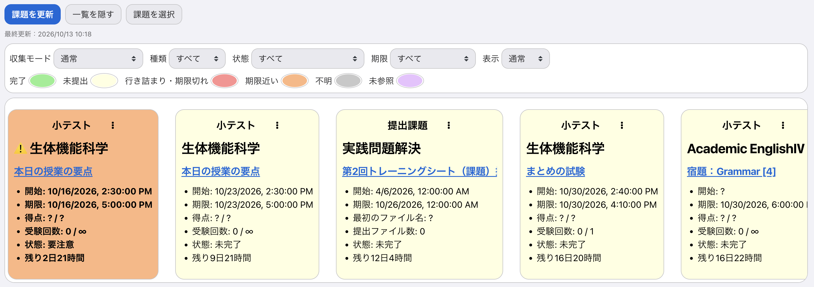
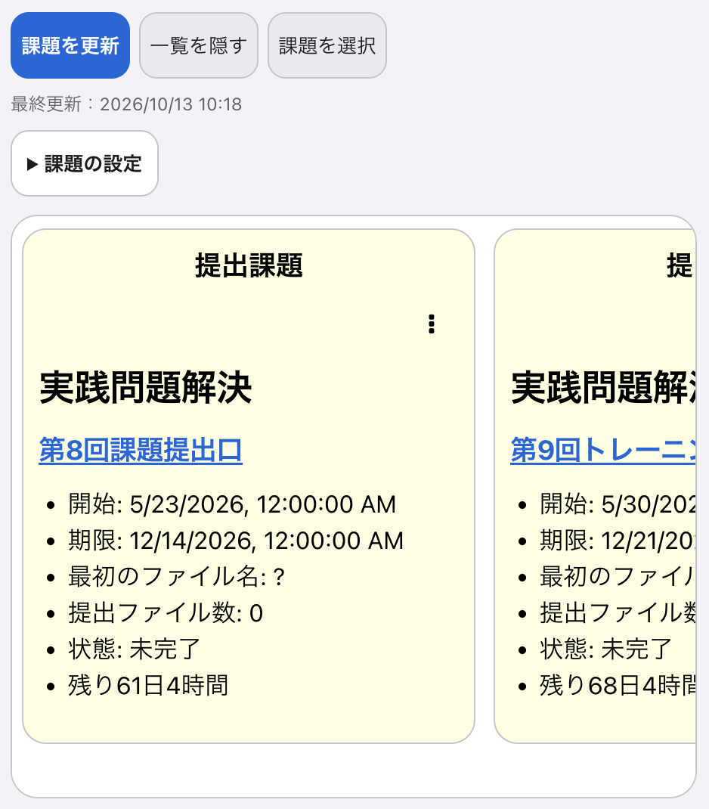
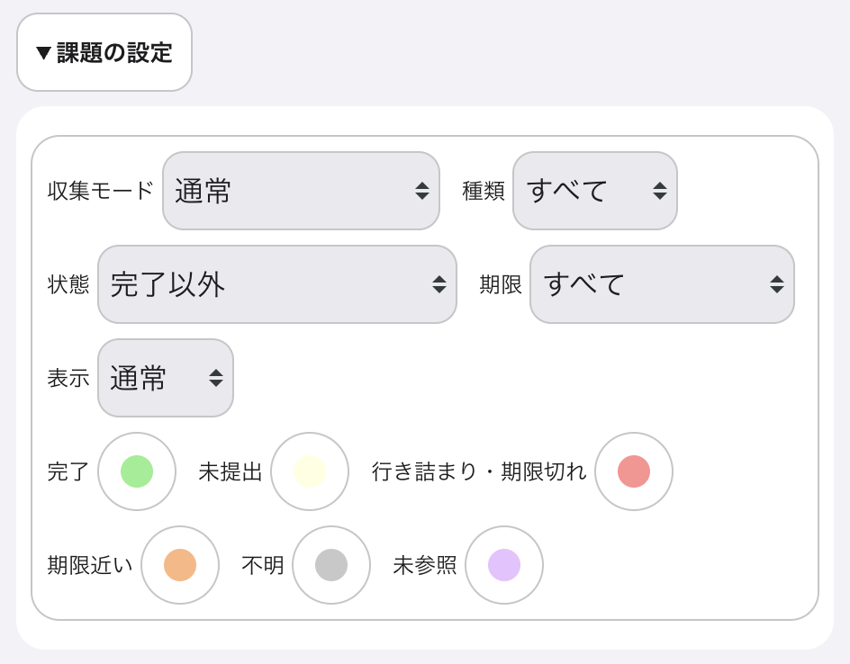
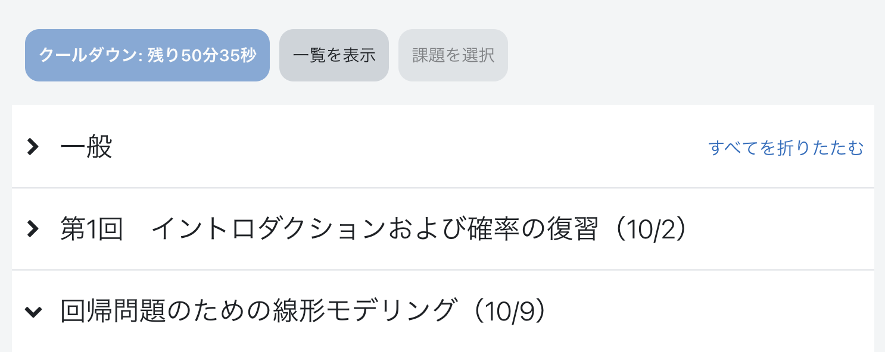
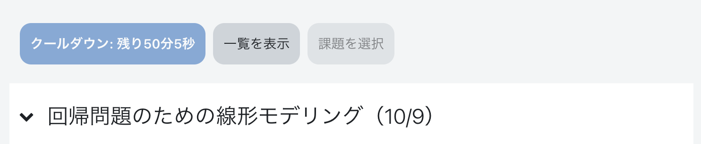

Duedle
使い方
まだDuedleを入れていない方は、端末ごとの導入方法をご覧ください。
課題を確認する
- 「課題を更新」を押す
課題や小テストの情報を読み込みます。更新が終わるまで、元のページを開いたまま待ってください。
- 気になる課題を開く
課題は横並びで表示されます。課題一覧は横にスクロールできます。
課題を押すと、それぞれのページへ進みます。
一覧はダッシュボードとコースページに表示されます。コースページでは、そのコースの課題だけを確認できます。課題は期限の近い順に並びます。
各課題の期限、提出状況、残り時間などを確認できます。小テストでは得点や受験回数も表示されます。取得できない情報は「?」や「不明」と表示されることがあります。

スマホでの表示例

一覧は、情報を取得した時点の状態です。提出できているか、最新の期限や成績がどうなっているかは、課題・小テストのページでも確認してください。
更新の時刻・間隔と収集モード
- 最終更新
- 「課題を更新」による全体更新が最後に正常完了した時刻です。自動更新や途中終了では変わりません。
- クールダウン
- 更新には3時間のクールタイムがあります。ボタンに残り時間が表示されます。
Moodleの表示中は、自動更新も行われます。自動更新は不定期に行われるので、課題確認の際には手動更新することを推奨します。
収集モード：「通常」のまま使用してください。「CSE用（別タブ）」は、別タブを使って情報を取得する必要がある場合のモードです。更新中に一時的なタブが開くことがあります。
提出ファイルを確認する
提出ファイルのリンクを押すと、対応ファイルはダウンロードせずにブラウザ上で確認できます。
課題のページで、PDF・画像・テキストなどの提出ファイルを開けます。対応していない形式や表示できない場合は、元のファイルリンクへ進みます。表示やダウンロードの方法はブラウザによって異なります。
課題を整理する
絞り込みと色分け
スマホでは「課題の設定」を開きます。パソコンでは、課題一覧の上に設定が並びます。
- 種類
- 提出課題と小テストを切り替えます。
- 状態
- 「完了以外」「未提出」など、課題の状態で絞り込みます。初期設定は「完了以外」です。変更した選択は保存されます。
- 期限
- 「24時間以内」「今週」など、期限で絞り込みます。
- 表示
- 「通常」は隠していない課題、「非表示」は自分で隠した課題、「すべて」は両方を表示します。他の絞り込み条件も同時に適用されます。
各状態の右にある色のついた部分を押し、好きな色を選びます。色は明るい表示と暗い表示で別々に保存されます。

色の意味と状態フィルター
- 完了
- 提出済み、または小テストで満点・合格点に達している状態です。合格点が設定されていないと確認できた小テストは、得点・満点・受験履歴を確認できれば完了として扱います。合格点を読み取れず、満点にも達していない場合は「不明」と表示します。
- 未提出
- 課題を提出していない、または小テストが未受験・合格点未満の状態です。
- 行き詰まり・期限切れ
- 小テストで受験回数の上限に達して合格していない、または「未提出」の課題・小テストが期限を過ぎた状態です。
- 期限近い
- 「未提出」の課題・小テストのうち、期限が3日以内のものです。
- 不明
- 小テストの点数が非公開などの理由で、結果を判定できない状態です。
- 未参照
- Duedleがまだ情報を取得できていない課題です。
「完了以外」には、完了扱いの課題は表示されません。「未提出」には「期限近い」も含まれます。
コース内の課題や「直近イベント」にも、課題の状態に応じた色が付きます。
予定に対応する課題を確認できない場合は「不明」、課題の情報がまだない場合は「未参照」の色になります。
不明な課題を「完了とする」
状態が「不明」の課題には「完了とする」が表示されます。Moodleで提出・受験結果を確認してから押すと、Duedle内で完了として扱えます。Moodle上の提出状況や成績は変わりません。
課題を隠す・元に戻す
各課題の右上にある、縦に並んだ3つの点を押し、「一覧から削除する」を選ぶと、その課題だけを隠せます。戻すときは「表示」を「非表示」にして、同じメニューの「一覧に戻す」を選びます。最後に「表示」を「通常」に戻してください。
複数の課題をまとめて隠す・戻す
- 「課題を選択」を押します。
- 隠したい課題の「この課題を選択」すべてにチェックを入れます。
- 「選択した課題を隠す」を押します。
選択をやめるときは「キャンセル」を押します。課題の表示状態は変わりません。
元に戻すとき
- 「表示」を「非表示」にします。
- 「課題を選択」を押して、戻したい課題すべてにチェックを入れます。
- 「選択した課題を戻す」を押します。
- 「表示」を「通常」に戻します。
見つからない場合は、「種類」「状態」「期限」をそれぞれ「すべて」にしてみてください。
課題を隠しても、Moodle上の課題や提出ファイルが削除されることはありません。
「一覧を隠す」を押すと、課題一覧の表示が閉じます。「一覧を表示」を押すと戻ります。
コース内を移動する
「セクション一覧」を開き、見たい授業回や見出しを押すと、その場所へ移動します。「▲トップへ戻る」でページの先頭へ戻れます。
スマホなどでは、「課題を更新」などのボタンの上にある「セクション一覧」を直接開けます。課題一覧を隠しても位置は変わりません。画面が広い場合は、ページの右側に表示されます。
「最近開いたページ」から、記録されているページへ戻れます。
開いたコースページが最大10件記録されます。スマホでは、見出しを押すと一覧が開きます。履歴欄がある画面で利用できます。
Duedle設定
ページ右上の「Duedle設定」を押します。
画面に自動で反映されること
ダークモードでは、問題文・課題説明も暗い配色にします。強調色は読める明るさに調整します。画像や図そのものの色は変更しません。
シラバスにも、選んだカラーモードとiOS風モードが反映されます。
画面の一部のユーザー名や重複する案内・リンクを隠し、ナビゲーションを整理します。パソコンの上部には時計も表示されます。これらは自動で適用されます。
コース
コースの並び替え
- 右上の「Duedle設定」→「コースの並び替え」を押すと、「コース概要の表示順設定」が開きます。
- 各コースの左側にある移動用のつまみを動かします。スマホでは長押ししてから上下へ、パソコンではドラッグして移動します。
- ページの保存操作で変更を確定します。
- ダッシュボードの「コース概要」で、並び順に「設定した表示順」を選びます。
キーボードでも操作できます。移動用のつまみにフォーカスを合わせ、SpaceまたはEnterで選択し、上下矢印で移動して、再びSpaceまたはEnterで確定します。Escで取り消せます。
閉じたタブの表示
コースのページで、右上の「Duedle設定」を開きます。「コース」の中に「閉じたタブの表示」があります。
「閉じたタブの表示」をOFFにすると、コース内で折りたたんだ項目を隠せます。ここでいう「タブ」は、授業回などのまとまりのことです。
隠れた項目も「セクション一覧」から選ぶと、その項目を開いて移動できます。閉じた項目をすべて表示する場合は、「閉じたタブの表示」をONに戻してください。
「一般」「第1回」は折りたたまれていますが、見出しは一覧に残ります。

閉じた「一般」「第1回」が隠れ、開いている項目だけが残ります。

困ったとき
課題が出てこない・一部の課題が見つからない
- 「一覧を表示」があれば押します。
- 「課題の設定」で「種類」「状態」「期限」「表示」をすべて「すべて」にします。
- 「最終更新」を確認します。まだ取得していない、または情報が古い場合は、更新できる時間になってから「課題を更新」を押します。
それでも見つからない場合は、Moodleのコースページで課題が公開されているか確認してください。
更新に失敗した・更新が中断された
通信状態を確認し、画面の案内に従ってもう一度更新してください。更新中はページを閉じたり、再読み込みしたりせずに待ちます。
途中まで取得できた情報や、それまで保存されていた課題は残ります。
アカウント・端末を変えるとき
課題や履歴は、確認できたMoodleのアカウントごとに切り替わります。再読み込みの案内が出たら、そのページを再読み込みしてください。ログアウトしても、保存した情報は端末に残ります。
Duedleには、端末やブラウザをまたいで課題・設定をまとめて引き継ぐ機能はありません。別の端末では、その端末で拡張機能を有効にし、課題情報を取得してください。
ヘルプ
不具合、改善のご要望、使い方の質問は、Googleフォームからお送りください。返信をご希望の場合は、フォームに返信先のメールアドレスを記入してください。
お問い合わせフォームは準備中です。
お問い合わせフォームを開く授業や課題の内容は担当教員へ、大学のシステムに関するお問い合わせはMoodleの「サイトサポートに連絡する」へお願いします。